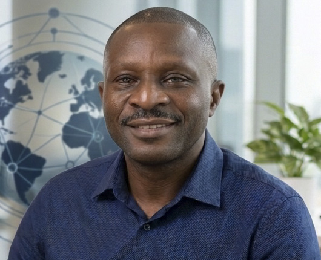
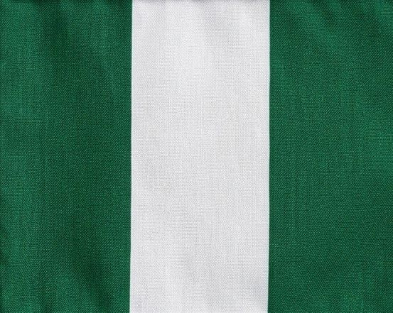

Samson Yakubu
About Me

My name is Samson Yakubu. I am from Nigeria. I am learning web development and programming. I enjoy learning new skills and using technology to solve problems.
Nigeria

Nigeria is a vibrant country in West Africa, known for its rich cultural heritage, diverse ethnic groups, numerous languages, and abundant natural resources. With its colourful traditions, lively music, delicious cuisine, and entrepreneurial spirit, Nigeria is a nation of great diversity, resilience, and opportunity.